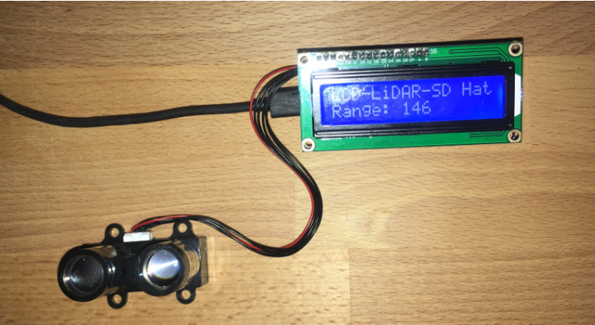
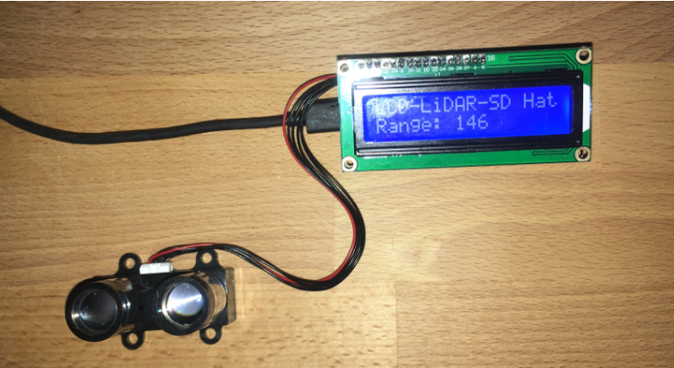
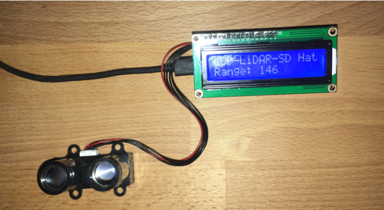

Période de réalisation : Octobre 2019
Contexte du projet : Projet réalisé suite à une initiation au Arduino afin de réaliser un radar pédagogique pour le lycée
Technologies utilisées : Arduino
Bilan : Ce projet m'a permis de découvrir davantage l'Arduino et les cartes LIDAR et la construction d'appareil électronique
